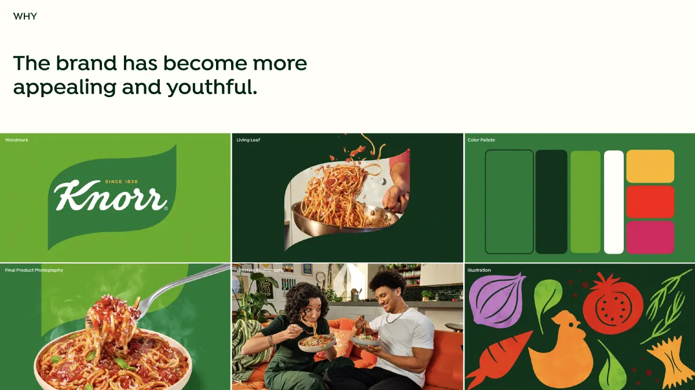
Unilever · Knorr US · Publicis Sapient · 2025A 187-year-old brand, made for the feed.
Redesigning knorr.com/us for Knorr's new, younger brand identity: a reskin of every component, a new homepage and recipe page, and social content built into the site instead of bolted on.
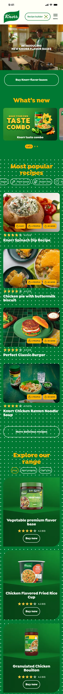
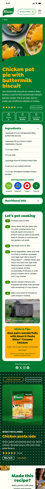
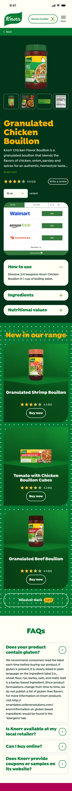
The brand got younger. The website hadn't.
Knorr had just launched a bolder, more youthful identity: a new wordmark, the "living leaf", warm lifestyle photography and a bright palette. The US website still looked and worked like the old brand.
The brief had three parts: reskin every component to the new identity, completely redesign the two pages that matter most (the homepage and the recipe page), and build in a social-first approach, because so much of Knorr's traffic arrives from social media on a phone.
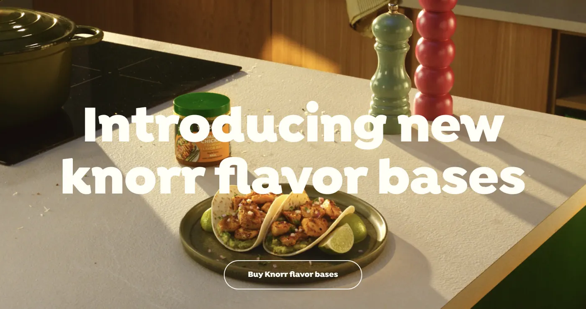
- My role
- UX & UI design (hands-on)
- Client
- Unilever · Knorr US
- Agency
- Publicis Sapient
- Platform
- Responsive web, desktop & mobile
- Timeline
- Aug–Dec 2025, live in December
Fix the cracks before painting the wall
Before designing anything, I reviewed the existing site, its information architecture and its analytics, and studied the best recipe sites in the US. The goal was to know what to fix as well as what to restyle.
products (82 unique) to present and connect to recipes
recipes, the main reason people visit
articles that were hard to find
Search moved around
Search sat in different places on different templates, so people who wanted a recipe fast had to hunt for it.
Recipes and products didn't meet
A recipe used Knorr Chicken Bouillon, but the page barely mentioned it, so the site was missing its strongest purchase moment.
Articles and the recipe builder were buried
Useful content existed but navigation didn't lead to it.
Mostly new visitors, mostly on phones
Most traffic came from first-time visitors on mobile, many arriving from a social post straight onto a single recipe.
Heavy pages
Large images and code made pages feel slow on phones, which matters most for people arriving from social.
Room to keep people browsing
Too many visits ended after one recipe. The site needed clear next steps.
What the best recipe sites do differently
I reviewed eight US recipe and meal-kit sites, including NYT Cooking, Serious Eats, America's Test Kitchen, HelloFresh, Blue Apron and King Arthur Baking, alongside Maggi and Mindful Chef. Three patterns stood out.
Clean, purposeful design
Clutter-free layouts, generous white space and full-bleed, warm food photography that makes a recipe look worth cooking.
Guided, hands-free cooking
A step-by-step cook mode with large type and simple navigation, so you can follow along with messy hands.
Smarter recipe discovery
Visual ingredient lists and quick filters like "30 minutes or less" or "vegan" to find the right dish fast.
Inspire, engage, then earn trust
I structured the homepage in three bands, each with its own job. That gave every module a reason to exist and made it easy to decide what to cut.
Inspire + guide
A campaign hero and what's new, so returning fans see something fresh.
- Full-bleed campaign hero
- What's new carousel
Engage + explore
The recipes people came for, with quick filters, then the product range.
- Most popular recipes + filter chips
- Explore our range with ratings
Trust + extend
Real people cooking with Knorr, and articles that keep you on the site.
- Join the Knorr community (UGC)
- Articles carousel
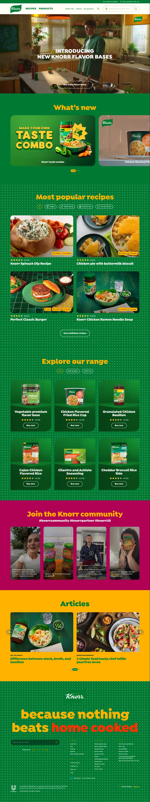
Recipes before products
Popular recipes come first, because recipes bring people to the site. Products follow, shown in the context of what you'd cook with them.
Filters as chips
Vegan, plant-based, gluten-free and 30-minute chips sit right above the recipe grid, taken from the discovery patterns in the competitor review.
Community on the homepage
Creators' videos sit beside Knorr's own content, so the site feels like the social channels people arrive from.
The page that does most of the work
Most visitors land straight on a recipe from search or social. So the recipe page has to cook well, sell the product and give people a reason to stay, in that order.
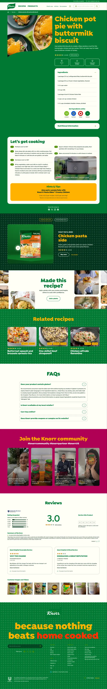
"What you'll need" is the product
The Knorr product used in the recipe gets its own block with rating and "Where to buy", right after the method.
Get ingredients online
Retailer buttons next to the ingredient list turn "I'll make this" into a basket, without leaving the recipe.
"Made this recipe?"
A prompt to add your own photo and review closes the loop with social, and gives the next visitor real proof.
One reskin, eleven templates
With the two key pages set, the new language rolled out across the rest of the site: product pages, recipe and product categories, search, articles, experts, FAQs and sign-up, on desktop and mobile.
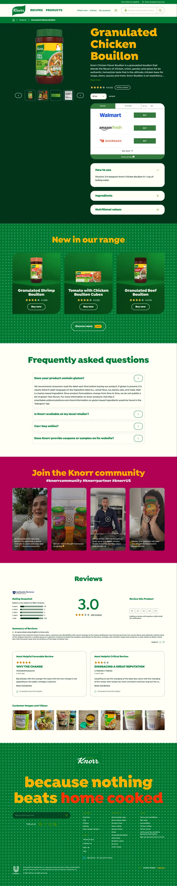
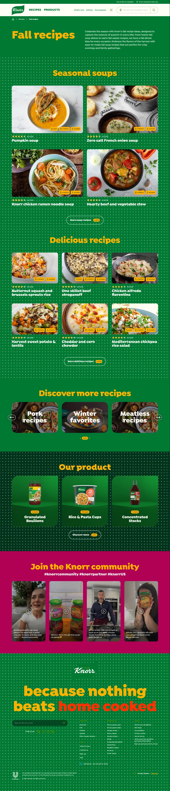
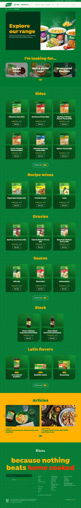
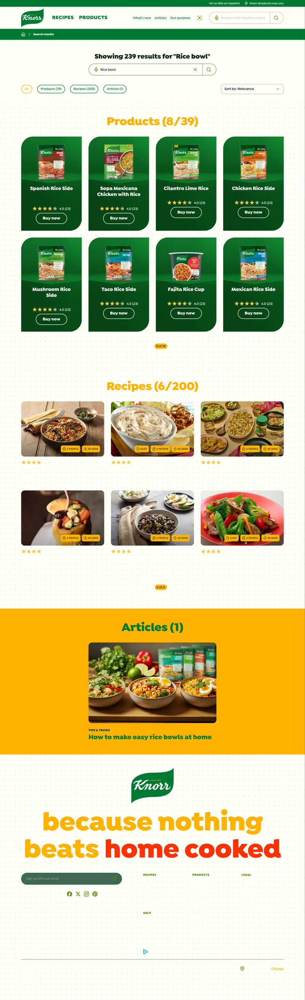
47 components, 11 templates, one shared system
I audited every component and template on the site, from accordions and nutrient tables to forms and Bazaarvoice reviews, so nothing was missed in the reskin. Then I started a foundational design system that other Knorr markets can reuse.
#007932 · primary#01331A · backgrounds#54A701 · accents#FFB200 · headlines#CD005D · community#FE3102 · highlights#FFFFF7 · surfacesType scale & tokens
An expressive display face from the new brand, set on a mathematical scale, with colour and spacing tokens named for developers.
Lifestyle product card
Product shot plus an in-situ lifestyle image, rating and "Buy now", reused on the homepage, product pages and recipes.
Patterned sections
The brand's wave pattern and colour bands separate homepage zones without extra dividers or chrome.
What shipped
The redesigned Knorr US site went live in December 2025, after design sprints, a component reskin in two batches, build sprints and two rounds of UAT.
key pages fully redesigned: homepage and recipe page
components reskinned to the new brand identity
unique templates reviewed and rolled out
weeks from kickoff to launch
Audit before you reskin. Reviewing all 47 components first meant the visual refresh also fixed real problems, like search placement and buried articles, instead of repainting them.
Design for where people arrive. Most visitors land on one recipe from a social post on a phone. Designing that page first, for mobile, shaped every other decision.
Make the product part of the story. Putting the Knorr product inside the recipe, not in a footer carousel, served both the cook and the brand's purchase-intent KPI.
Social as a design principle, not a widget
Instead of embedding a feed in the footer, I designed social into the moments where it helps: sharing a recipe, sharing the dish you made, seeing others cook with Knorr, and later, shopping straight from the feed.
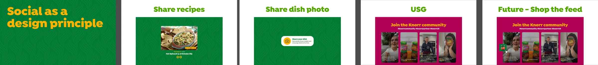
Share recipes · Share your dish photo · Community content (UGC) · Future: shop the feed